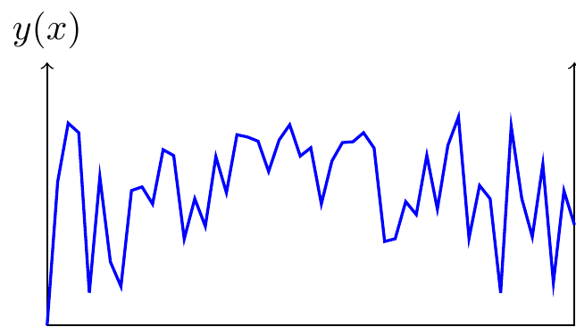
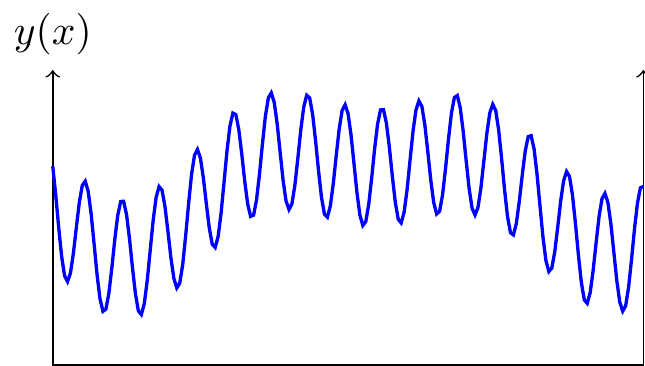
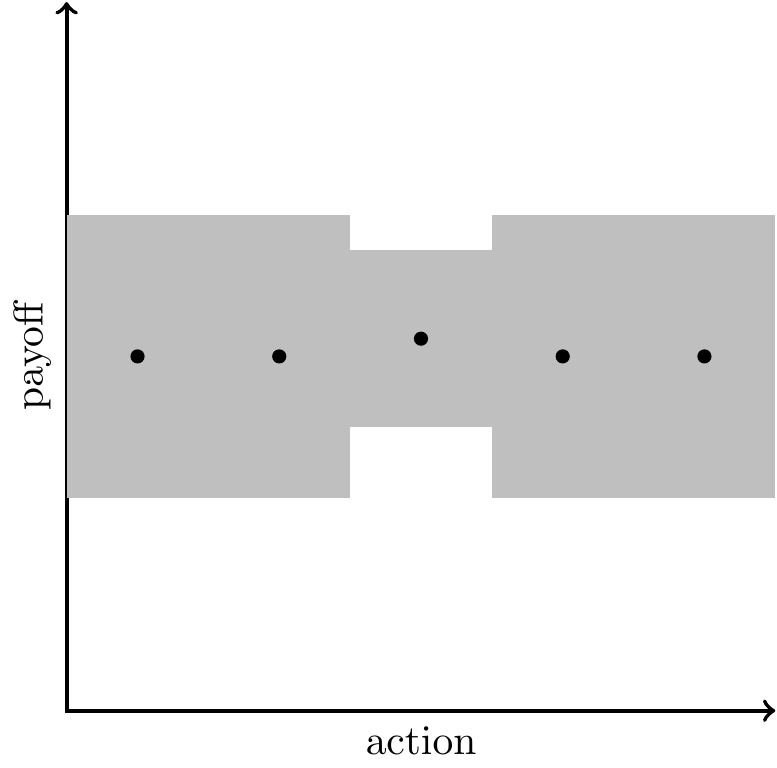
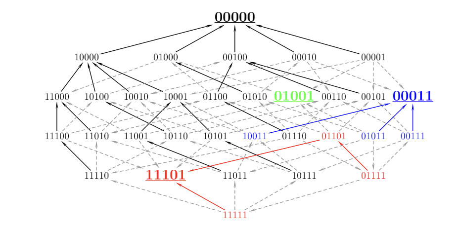
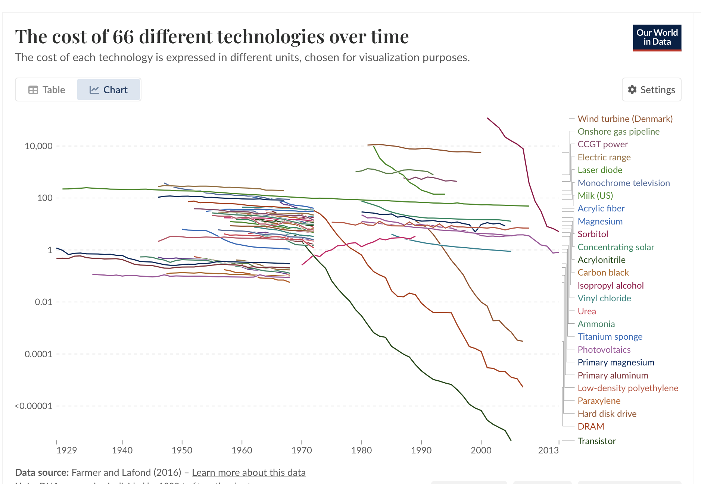
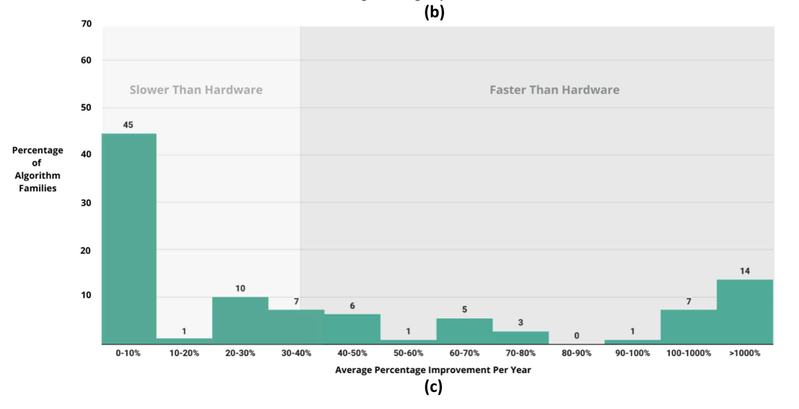

New Introduction

- The effect of AI on innovation will depend on the shape of the landscape.
-
It seems like AI ought to dramatically accelerate innovation, but many people argue that we will be constrained by our physical ability to test any new ideas, e.g. we need GPUs to test new algorithms, we need labs and studies to test new drugs.
Here’s a nice observation: the value of AI depends on the shape of the innovation landscape. If the landscape is random then AI won’t help at all, if the landscape has latent structure then AI will help a great deal.


- Three types of landscape.
-
Suppose each period we choose an \(x\) to minimize \(y(x)\), where \(y(\cdot)\) is unknown. This is a well-defined explore-exploit problem, and we can characterize the expected progression of efficiency over time (the decline in \(y(.)\) over time) as a function of the statistical structure of the landscape:
- Random landscape: If each \(y(x)\) is completely independent there’s no intelligence needed in choosing \(x\) (beyond keeping track of which locations you’ve already tried). The growth in efficiency as a function of \(N\) draws depends on the distribution of values of \(y\) (Muth, 1986).
- Rugged landscape: If \(y(x)\) is correlated across \(x\) but the correlation is local (e.g. if \(y(x)\) is a Weiner process) then the best-estimate of \(y(x)\) for a new \(x\) will depend only on the neighboring values of \(x\). Callander (2011) and Carnehl & Schneider (2025) characterize the optimal strategy. Again we are not constrained on intelligence: the extrapolation algorithm is fairly simple.
- Regular landscape: Finally suppose the landscape has some deep latent structure. In this case the best-estimate of \(y(x)\) will depend on the entire collection of previously-observed pairs \((x,y)\), and so we do expect that predictions could be improved with more intelligence, and so AI should have a big impact.
- Random lanscapes: we expect little impact of AI.
-
- Discovering species. Discovering viruses, discovering planets. When discovering new objects the observations cannot be well-predicted from first principles, we inevitably need new observations.
- Plant breeding. Suppose we breed plants just by selecting the highest-yield mutations. The statistical problem is trivial, and AI won’t help at all.
- Mapping a genome. The exact base pairs in a genome require individual observations.
- Regular landscapes, where we expect a large impact.
-
- Folding proteins.
- Discovering candidate drugs.
Old Introduction
- A model of the world as accumulating knowledge.
- Suppose we’re all farmers and we’re gradually discovering the most efficient way of growing crops through trial and error – choosing how deep to plant the seeds and how far apart, how often to water, what fertilizer to add. We all can observe each others’ choices.
- Think of this as a model of all economic history.
-
We can interpret “growing crops” as all economic choices – building cars, treating diseases, writing novels. Implications:
- Knowledge accumulates over time.
- People tend to all adopt the same technique (herding), and there are some non-market forces to encourage exploration (public investment, intellectual property laws).
- There will be specialization – if experience is imperfectly observable then some people will know relatively more about their particular field, and so have higher productivity, and we’ll get endogenous specialization.
- The ruggedness of the landscape determines the economics.
-
The ruggedness of the landscape means the degree of non-convexity, and so existence of local optimums. A high degree of ruggedness implies:
- Rugged domains will have steep growth with experience/time (as we discover progressively higher peaks)
- Rugged domains will show higher efficiency in larger societies
- Rugged domains will require more education/apprenticeship to learn best practices (rather than discover them on the job)
| smooth | rugged |
|---|---|
| cutting hair | agriculture |
| cooking food | medical treatment |
| entertainment (music, writing, movies) | chip design |
| teaching | |
| nursing care |
- The effect of AI depends on the ruggedness of the landscape
-
- If rugged, and AI helps illuminate the landscape, then expect rapid discovery improvements.
- If smooth then we’re probably already close to global optimum, so AI doesn’t help much.
Thus the best proxy for future productivity growth is past productivity growth.
- AI will have two effects.
-
- Share knowledge – suppose knowledge is characterized by prior experiences, then AI could pool all experiences.
-
- Generate knowledge – in some cases AI can reveal the landscape, i.e. gain knowledge that no human has.
- Implications for media.
- Suppose \(x\) represents a piece of media and \(f(x)\) represents its entertainment-value. We expect a slow process of discovery. (Notable that here \(f(x)\) represents our own knowledge).
Model: Exploring a Landscape.

Assumptions:
You choose some \(x\) and get payoff \(y(x)\). The function \(y(.)\) is unknown, so you don’t observe the payoff until you try it out. You can interpret the action as a blueprint for a house, a business plan, a computer program, an agricultural practice, a novel, a song. Everything below also applies when the payoff depends on the state, \(v(x|z)\), and so the action is context-specific, e.g. replying to an email, operating a car, operating a machine, writing copy to advertise some product.
You keep making the same choice over time.
Everyone is playing an independent game, but can observe each other. We’re all subsistence farmers living side-by-side, our actions don’t directly affect each other. Suppose we can all observe each others’ choices but not their payoffs.
Implications:
Exploration will decrease over time.With a single agent they will stop exploring at some point, and choose \(x\) every period. E.g. we see that societies adopt certain practices in agriculture, architecture, clothes, cooking, and then settle on those once they have exhausted local improvements.
Everyone will do the same thing (herding). If actions are observable then it is rational for each person to imitate others’ actions, and so within a society everyone’s actions will tend to be clustered in a neighborhood (if you’re walking through a minefield, you want to follow someone else’s footsteps).1
There will be inefficiently little exploration. When you try out a new \(x\) then your neighbors benefit because they can learn from your experience. We will thus have a million farmers all doing the same thing, it would be better if some of them experimented. We can collectively organize this: (A) sponsor people to run experiments; (B) let people register a claim on some \(x\) and charge others to use it (intellectual property protection).
Bigger societies will find better designs. Bigger societies will have (A) more random variation to learn from; (B) more ability to collectively organize to explore.
People will become experts. Some people will learn the local neighbhorhood of their payoff-space and can charge for that expertise: artisans, architects, artists, doctors.
Assumptions on landscape
Assume \(v(\bm{x})\) is non-convex. If it’s convex then you’ll gradually converge to the global maximum by local exploration.
Observations
Agricultural Yield is Exploration. Agricultural societies slowly accumulated crop management practices that have raised yields (irrigation, rotation, fertilizers). The invention of printing made knowledge diffuse more quickly, & so more people caught up to the knowledge frontier (e.g. Diderot’s encyclopedia). Organized research advanced the frontier. People argue over whether intellectual property was a positive or negative for innovation.
Technologies of Reproduction. You could extend the model such that you pay a lower cost when your action is an exact copy of an existing action (a reproduction). Certain technologies made it cheap to reproduce existing things: writing, printing, photography, audio recording, video recording. This increases welfare but makes outcomes more homogenous, the distribution of actions becomes very spikey.
Science Maps out the Landscape. Normal progress consists of mapping out individual points on the landscape. Scientific progress is different - it maps out big areas. Newtonian mechanics tells you the stability of any bridge; modern chemistry tells you the properties of any combination of ingredients.
Applications to AI
There are multiple things AI can do here: (1) predict the outcome given each context and action (\(v(\bm{z},\bm{x})\)); (2) find an action \(\bm{x}\) which maximizes \(v(\bm{z},\bm{x})\); (3) predict the typical human action (\(\bm{x}\)) given the context (\(\bm{z}\)). The last is imitative.
Human-level classification (content moderation, radiologists). You train a model on human labels to classify inputs. Now classification becomes very cheap. Expect this to be a substitute for low-skilled employees: borderline cases would still be escalated to the high-skilled employees.
Super-human classification (sexing chickens; MRI). You see a chick \(z\), you choose whether to raise it to a chicken (\(x\in\{0,1\}\)), and you get payoff if the chicken is female. Humans can’t tell the difference between male and female chicks by sight, but suppose AI models figure out how to do it. This is a pure yield increase for chicken ranchers because you save the cost of raising male chicks.
Synthesize media (text, music, video, ads). Here the function \(v(\cdot)\) represents human appreciation. Thus the function is known in a certain sense but the knowledge is implicit, and so in practice we explore the space and we we have experts: writers, musicians, artists, who can create content that gets a good reaction.
Playing chess.
Folding proteins.
Writing code (imitative).
Face recognition.
Creating pictures.
Driving a car.
Writing boilerplate text.
Suggesting responses to customer queries.
Satisfying constraints.
LLM answering factual questions.
| linear fit? | skill-biased? | |
|---|---|---|
| estimating probability of death (or loan default) | yes | |
| agricultural management (irrigation, rotation, fertilizer) | yes | |
| classifying whether photo is porn | no | |
| classifying whether text is hate speech, spam, etc. | no | |
| classifying sex of chicken | no | |
| answering a customer question about a product | no | |
| driving a car | no | |
| answering a factual question | no | |
applications
- Types of designs.
-
- design for consumption: a story, a novel, a song, a picture, a wood-carving.
-
- design for function: computer code, agricultural practice (what to use as fertilizer, when to water plants), a letter, conversation with a customer, blueprint for a building.
-
- tacit knowledge of practices. How to operate a machine, how to stitch a collar, how to pitch a sale to a client.
- LLMs aggregate existing knowledge.
- LLMs don’t map out new points on the landscape, but aggregate existing knowledge. They are similar to encyclopedias or search engines. We’d expect each of these decisions to raise the quality of decisions, but also lower the returns to expertise: e.g. experts on Cobol, on rare diseases, on asbestos management.
- LLMs translate between two idioms.
- They can serve as interfaces between business logic and humans. They can write emails & probably soon will have telephone conversations.
Much human work can be thought of as translation: (1) customer support tells you how your situation fits into the policy; (2) insurance adjuster translates your bent fender into policy language; (3) literal translators/interpreters.
Many occupations are translating between human and machine. People who serve as interfaces between a mainframe and the customer: call center agents, gate agents, insurance adjusters, bank tellers, tax agents, rental car service clerk. They talk to the customer and type stuff into a computer.
Slow replacement with self-service: ATMs, self-service kiosks, automated phone systems, websites, phone apps.
It’s been difficult to automate policy agents, but some societies have been successful: Sweden tax by SMS, Japanese vending machines, ATMs instead of bank tellers.
Application to Intellectual Property
Key points:
We have IP protection because the landscape is shrouded in clouds.
AI illuminates the whole landscape. An implication is we should substantially loosen IP law, so it’s not just a race to acquire land.
Copying occurs in a pre-AI world, but in the post-AI world there’s no real distinction between creation and copying.
LLMs could be prevented from producing exact matches with a hash function. (bloom filter?)
- We should carefully distinguish current IP law or future IP law or ideal IP law.
- Much of the debate is about how to interpret current IP law, but current IP law was written as a response to a specific situation, we should ask how do we expect IP law and interpretation likely to change, and what would be the ideal IP law?
- Artefacts that can have intellectual protection.
-
- Chemical composition of a drug
- Process used to manufacture a light bulb
- The likeness of a cartoon character
- A brand name
- A photograph
- The text of a news article
- The lyrics of a song
- The facts reported in a news article (sometimes)
- A software algorithm
- We can make two assumptions about the landscape:
-
- Snowflake/atomic: \(y(x)\) has no structure, each \(y(x)\) is a random draw.
-
- Smooth: \(y(x)\) has structure, so as you observe more you’ll make better decisions.
- Model: unique snowflakes.
- Suppose each work is its own unique snowflake, this is a common way of modelling intellectual property (I think the Josh Gans paper assumes this). Implications: 1. Copying is binary. you either copy or you don’t, there’s no partial copying. 2. The marginal value of information is equal to the average value. (???)
- With AI everything is illuminated.
- Now suppose that AI illuminates the entire landscape, i.e. the mapping \(v(x)\) becomes fully known to everybody.
- E.g. we can suddenly observe (1) of all possible drugs, how effective is each; (2) of all possible lyrics, how resonant is each; (3) of all possible paintings, how attractive is each.
- Distinction: whether the value is the world, or human response.
- It’s worth distinguishing two sources of uncertainty in v(x): whether v(.) measures the effect of x on the outside world, or the effect of x on human responses.
-
- About the world: \(v(x)\) represents efficacy of a drug, or the speed of a sorting algorithm.
-
- About human responses: \(v(x)\) represents memorability of a poem, the click-through-rate of an advertisement, the beauty of an image.
- Prediction: there will be less imitation in the post-AI world.
- If the full landscape is disclosed then there’s no longer a reason to imitate. You can just choose the x which maximizes v(x). We will still see clustering, people will choose similar values of x, but just because they maximize v(.), not because they’re imitating each other.
- Twist: familiarity changes the value.
- In some cases the use of an input x will change the output v(x). E.g. after people have been exposed to a particular phrase or a particular cartoon character then that particular realization becomes more attractive in the future. As a consequence the landscape will have ridges, creases bearing the imprint of particular cases (distinct from the ridges due to finite training data).
- Good application: genre novels.
- Suppose we have a set of 10,000 novels which are romance or western or fantasy. We can think of the probability distribution from which they’re drawn.
- The probability distribution will have a ridge around actual novels but also a lot of structure off that; trained on 10,000 novels from a trillion; could just avoid direct quotes (bloom filter) but still pick up the sense.
- The marginal value of information is close to zero.
- The returns to information are highly concave: think about the value of each dot on the landscape, the value decreases with something like sqrt(N). As a consequence if we pay people for the marginal value of their information the payments will be very small. (Euler’s theorem: if a function has constant returns to scale, then sum of payments to factors will exactly equal total product).
- This result only holds in the landscape world, not in the snowflake world.
“Data are considered discoverable”Facts,” not original works in themselves, and are thus not copyrightable. The methods of compilation, analysis, annotation arrangement, or selection of data, which may be novel, unique, or proprietary, can be protected under copyright.
Other Candidate Metaphors
I want a good metaphor but not sure which is best.
- Crop management [BEST].
- We’re all farmers and gradually discovering better ways to grow our crops – how deep to plant the seeds and how far aprat, what to put on as fertilizer, how often to water.
- Drug design.
- We’re choosing a combination of ingredients to maximize effectiveness in treating some condition. We generally follow others’ recipes very closely, occasionally adding a new one to the repertoire. Very likely there exist far more effective combinations that we’re not aware of.
- Drilling for water.
- We have a huge desert & we want to know the best spots to drill for water. We go around drilling spots, and gradually build up some theory about where the water is.
Modelling Knowledge
- Knowledge is often treated implicitly in economic models.
-
Many economic models have some parameter described as representing the knowledge of the agent, and which acts as a productivity multiplier. This is how knowledge is represented in many growth models. This can be extended to a vector of productivities across different types of good, representing knowledge in different domains (e.g. Becker & Murphy (1992)). A slightly richer model is in Garicano (Ide-Talamas), where each agent’s knowledge is a scalar which represents the most difficult problem they can solve.
- It is useful to have an explicit model of knowledge.
-
Knowledge is modelled explicitly when the agent has some beliefs about the state of the world, and update those beliefs based on experience. Having an explicit model of knowledge allows us to derive equilibrium behaviors as a function of the statistical structure of the world:
- The returns to experience – and from that the equilibrium degree of specialization.
- The incentives for exploration – and from that social learning, herding, & the effects of IP protection.
- The relative performance of computers vs humans across different domains (or the relative performance of different algorithms).
- General model of knowledge.
-
The simplest model of knowledge has an unobserved state of the world \(\theta\), an action \(x_t\), and the agent receives payoff \(u(x_t|\theta)\). This a basic bandit problem, where knowledge of \(\theta\) accumulates over time.
Some models additionally have a dynamic signal \(z_t\), so payoff is \(u(x_t,z_t|\theta)\). These can be reduced to simpler state-action models by interpreting the action as a function going from signal to action \(x(z_t)\).
Summary of Models
| model | signal | action |
|---|---|---|
| BANDIT / LANDSCAPE | ||
| - K-arm bandit | none | categorical |
| - Jovanovic & Nyarko | none | categorical |
| - Callander rugged landscape | none | scalar |
| - NK fitness | none | vector |
| - Bayesian optimization (GP-UCB/TS) | none | vector |
| SUPERVISED LEARNING | ||
| - gaussian process regression | vector | scalar |
| - nonparametric regression | vector | scalar |
| - question-answering | vector | scalar |
| CONTEXTUAL BANDIT | ||
| - Linear contextual bandit | vector | vector |
| - Contextual Bayes optimization | vector | vector |
| - Optimal control (Kalman filter) | ||
| - Reinforcement learning |
Models of Knowledge
- Binary action (bandits).
-
There is a big literature studying “strategic experimentation” where the action is binary, often with one safe and one risky arm. See a good survey in Hörner & Skrzypacz (2016) Strategic experimentation, learning, information design.
- They distinguish between two types of bandits: whether a null outcome is good news or bad news.
- 2.1: strategic bandits. everyone has to play a bandit game, but they observe others’ choices and payoffs, so there are informational externalities. They say that equilibrium is generally complex so it’s often studied in simplified settings. Each player can choose either safe or risky arm. We can compare compare choice of risky when playing alone vs when you observe someone else: there are free-riding effects, but also encouragement effects – if you’re successful then it will provoke more experimentation by the other guy.
- 2.2: imperfect observation. They say “observed actions, unobserved outcomes remains largely unsolved … but .. unobservable actions, observed outcomes is better understood.”
- They note that most of the literature has just two actions. The discuss the Callander setup – where beliefs over W(p) are a Weiner process. This has the nice property that beliefs will depend only on nearest neighbors.
- Continuous action, Gaussian-quadratic outcome.
-
Jovanovic & Nyarko (1996) have a model with \(K\) different technologies, for each there’s some unobserved \(\theta\), you have Gaussian priors over each, and as you operate the technology longer you update your beliefs. This can be reduced to a model where you just choose which technology to use (\(k\)), and your productivity in that technology increases over time. Implications:
- Exploration is front-loaded – the value of information falls with experience.
- Hysteresis – the mroe experience you have with one technology the less likely you are to switch.
- Continuous action, Weiner outcome.
-
Callander (2011, AER) “Searching and Learning by Trial and Error.”: Outcomes are the realized path of a Brownian motion over the choice space; optimal experimentation is history‑dependent and can settle at local optima.
“Innovation in this market is irregular with frequent changes of direction and cycles between frontier and niche innovation. We show how the ruggedness of the technological landscape itself deters innovation, generating less entry and product differentiation, narrower markets, and more intense competition than in a world of certainty.”
-
Carnehl & Schneider (2025, Ecma) “A Quest for Knowledge”
“Researchers select a question and how intensely to study it. The novelty of a question determines both the value and difficulty of discovering its answer. We show that the benefits of discoveries are nonmonotone in novelty. Knowledge expands endogenously step-by-step over time.”
- Atomic actions.
-
- Kortum (1997) “Research, Patenting, and Technological Change”. He assumes that technological progress comes from taking random draws from a distribution (undirected search). Then growth over time will be characterized by the extreme value distribution of the underlying distribution, & returns to experience will depend on the thickeness of tails: (1) Bounded: (hits a ceiling) ; (2) exponential (thin tails): \(A=\ln n\); (3) Pareto (thick tails): \(A = n^\gamma\). Note that completely random (undirected) search seems a poor fit for most innovation processes. Examples: Edison testing filaments, high-through drug discovery, evaluating mutations. The theory has a clear implication: that over time the share of trials that are failures increases very strongly; but in fact it’s not clear this is true.
-
- Agrawal, McHale and Oettl (2023) model a finite distribution of alternatives, and the inventor has a prior probability of success for each. They let AI change the distribution of priors, and they show that this change will decrease time-to-success and increase R&D effort.2
- Vector action.
- See a good discussion of evolutionary fitness landscapes here. They draw beautiful models of fitness landscapes in a 2^n space, and they have a bunch of empirical findings from bacteria about ruggedness of those landscapes: 
-
Models:
- House-of-cards. The fitness of each genotype is a random draw. You can get nice clean expressions for the expected number of local optima.
- Mount Fuji – The function is entirely separable.
- NK model Total fitness \(W\) is the arithmetic mean of the \(N\) component contributions: \[W(s) = \frac{1}{N} \sum_{i=1}^N w_i(s_i, s_{i_1}, \dots, s_{i_K}),\] Note that component \(w_i\) depends on \(s_i\) plus up to \(K\) other components. This model is highly cited in management, but less in economics. (Kauffman & Weinberger (1989))
- Rugged Mount Fuji - \(f(\sigma) =−cd(\sigma,\sigma^*)+\eta(\sigma)\), where \(d(.,.)\) is Hamming distance between \(\sigma\) and the global optimum \(\sigma^*\).
- Levinthal (1997) applies Kauffman’s NK model to business decision-making.
- General action (nonparametric learning).
-
Finally we can talk quite generally about nonparametric estimation of a function, AKA supervised learning. There we have some nice expressions of learning rates (how error trends with N), and how it relates to the function’s curvature and dimensionality. We can treat this as a maximization problem, consistent with the cases above: suppose you receive a series of cases from some distribution \(f(x)\) and you have to classify each case, given some loss function.
Data on Progress Over Time
Cost Reductions from Our World in Data

- https://ourworldindata.org/grapher/costs-of-66-different-technologies-over-time
- Most are around 1%/year, outliers: DNA sequencing, photovoltaics, hard disk drive, DRAM, transistor.
Data on Algorithmic Progress
Sherry & Thompson (2021) “How Fast do Algorithms Improve?”
“We find enormous heterogeneity in algorithmic progress, with nearly half of algorithm families experiencing virtually no progress, while 14% experienced improvements orders of magnitude larger than hardware improvement (including Moore’s law).

Others:
- Channel coding efficiency: we are very close to the Shannon lower bound.
- Compression efficiency: compression has been getting better consistently better over time, & LLM perplexity is essentially a model of copmression (the Hutter prize). LLM-based compression is far more efficient.
Learning Curves
- Learning curves
- McNerny (2022) talk about Wright’s law: cost falls exponentially with quantity, \(c\propto Q^{-\alpha}\). They say typical \(\alpha\) = 0.32, so 10X quantity gets 50% reduction in cost. (They note that it’s hard to distinguish between effects of scale vs effects of time; also there could be reverse causation from scale to cost.)
Appendix
Some other literature.
- Rational herding / cascades: Banerjee (1992); Bikhchandani, Hirshleifer & Welch (1992); Chamley (2004, Rational Herds).
- Social learning and networks: Vives (2008, Information and Learning in Markets); Bala & Goyal (1998); Jackson & Yariv (2011).
- Learning‑by‑doing / technique choice: Jovanovic & Nyarko (1996).
- Path dependence / specialization: Arthur (1989); Polya urn processes.
Offcuts
2025-08-23 | what conditions are required for AI progress?
- Basic model: you choose between \(N\) alternatives, costs \(c\) to evaluate each.
- For each alternative there is some true value, \(y(x)\), which you only observe by paying the cost. You thus rank all the alternatives according to your prior, \(E[y(x)]\), and take draws until the expected improvement is equal to the expected cost (to simplify, suppose that new draws don’t update the priors on other alternatives).
- In this model computers can do two things.
- (1) Computers lower the cost of evaluation.
-
- Full evaluation. In some domain the ground truth can be calculated by a computer: (A) efficiency of an algorithm; (B) the physical properties of a system (e.g. physics); (C) constraint satisfaction, e.g. Sudoku, chess. Note that LLMs and neural nets are not very good at these exact calculations.
-
- Approximate evaluation. E.g. (A) simulation of weather; (B) simulation of a building’s structural integrity; (C) whether a joke is funny; (D) predicting whether protein will fold.
- (2) Computers give information about alternatives.
- You can model this as .
- Implication: AI isn’t useful only in cheap-evaluation domains.
- Dean and Hassabis both say AI will be useful only when you can evaluate cheaply.
- Places where evaluation is expensive: (1) drugs; (2) ;
- CLAIM: AI acceleration depends on the structure of the landscape.
-
- Random landscape: discovering viruses. – the landscape has irreducible complexity. It’s high-dimensional.
-
- Regular landscape: optimizing algorithms. – can find patterns that others haven’t discovered. / Especially good at solving problems that are not deterministic, but borrow structure from other similar problems – e.g. crosswords, chess, sudoku. / And will likely find the ground truth for some algorithms, the best possible: e.g. efficiency bound for algorithm, or Nash strategy for a game.
-
- Regular landscape: .
offcuts
The Fitness landscape leaves as impression - like a plaster cast ; you can figure out from petals of a flower where it lives and who else lives nearby.
Examples of brute force exploration: (1) wildcat drilling; (2) high-throughput drug discovery; (3) growing seedlings looking for beneficial mutations.
Footnotes
Define equilibrium as when everyone chooses the same \(x\) every period. This follows if there’s common priors, common-knowledge-of-rationality, and a regularity assumption on beliefs. Choosing some \(\cap{x}\) implies that, for every \(x\neq\cap{x}\), that \(E[y(\cap{x})] - E[y(x)]\geq 0\). Assume these inequalities are always strict, meaning every \(E[y(x)]\) is one-to-one (injective). Then if two people choose different \(x\) they must disagree about one of those inequalities, violating common knowledge of rationality (Aumann’s agreeing-to-disagree).↩︎
Note that they set up the landscape as a combination of N elements, but by email they confirm that the combinatorial structure isn’t actually used. They say their earlier paper on needles-in-haystack does use that structure.↩︎
Citation
@online{cunningham,
author = {Cunningham, Tom},
title = {Landscape {Shrouded} in {Clouds}},
url = {tecunningham.github.io/posts/2025-08-02-landscape-shrouded-in-clouds.html},
langid = {en}
}